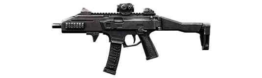
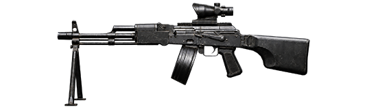
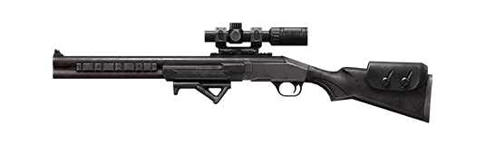

Como detalhado nas notas da Atualização OB55, a Garena confirmou M7, Skorp, RPK e Harpia como as quatro novas armas da próxima temporada do Contra Squad, com lançamento marcado para 1º de outubro de 2026. Cada uma usa características diferentes de disparo e recuo.
M7: fuzil de alto dano

A M7 é um fuzil de assalto automático com um sistema de recuo que faz a mira subir progressivamente durante o disparo. Segundo a Garena, a arma combina alto dano e boa precisão para confrontos de média e longa distância.
Skorp: alta cadência e penetração de armadura

A Skorp é uma submetralhadora com alta taxa de disparo e penetração de armadura. O sistema de recuo segue uma lógica parecida com a M7.
RPK: metralhadora leve com mobilidade

A RPK é uma metralhadora leve automática. A proposta é combinar o poder de fogo de uma LMG com mobilidade próxima à de um fuzil de assalto, exigindo controle de recuo para manter a precisão.
Harpia: dois tiros e muito dano em pouco tempo

A Harpia é um fuzil de precisão com apenas dois tiros no cartucho e alta taxa de disparo. A Garena afirma que acertar os dois disparos em rápida sequência pode eliminar imediatamente adversários com armaduras de nível baixo.
Além das quatro estreantes, a OB55 também traz uma rodada de buffs e nerfs em MP40, UMP, Vector, M1887, M590 e outras armas.
Preços e onde encontrar
No Contra Squad, os preços confirmados são: M7 por 1600, Skorp por 1500, RPK por 1500 e Harpia por 1700 de grana do CS.
No Battle Royale, a M7 poderá aparecer no chão de forma rara, em zonas azuis de itens valiosos e em barracões. Skorp, RPK e Harpia também entram no loot de chão e em Suportes de Armas. A Skorp ainda será a arma padrão após um Ressurgimento Supremo. Para entender as outras mudanças de partida, veja também os novos eventos aleatórios do Battle Royale.
Nas Máquinas de Vendas, a M7 e a Harpia custarão 400 Fichas FF, com limite de cinco compras por partida. A Skorp custará 100 Fichas FF e não terá limite de compra.